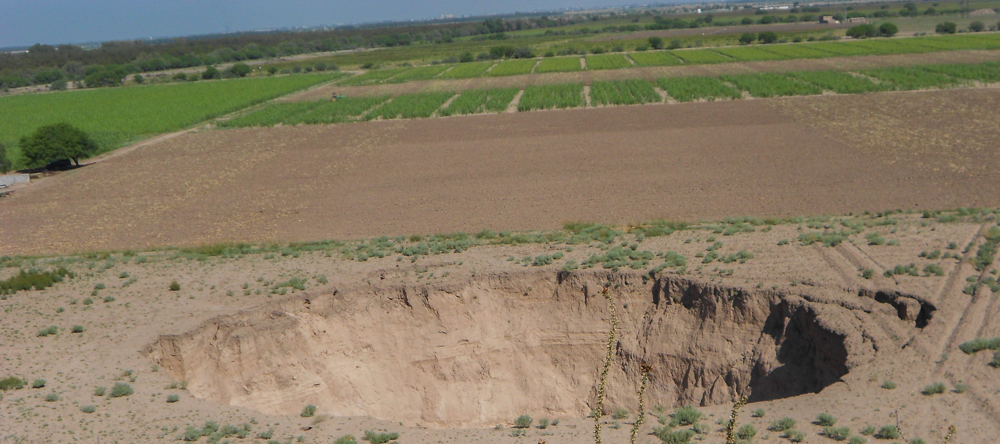

Antecedentes
La mayoría de los centros poblacionales en el mundo dependen, en gran medida, de las aguas subterráneas para su crecimiento y desarrollo. La Región Lagunera no es la excepción; hasta el 2020 dependía del agua de los acuíferos para el consumo humano, el uso industrial, comercial, servicios, minería y para la actividad agropecuaria. Por Decreto presidencial el agua del Nazas y el Aguanaval se destinan para el uso agrícola.
El agua subterránea se almacena en los llamados acuíferos, es decir formaciones geológicas naturales capaces de retener el agua entre sus capas.
La Laguna cuenta con ocho acuíferos o reservas de agua subterránea para, prácticamente todas sus actividades. Estos son: Nazas, Vicente Suárez, Villa Juárez, Acuífero Principal, Ceballos, Acatita, las Delicias y Oriente Aguanaval.
El Acuífero Principal de la Región Lagunera se ubica al suroeste del Estado de Coahuila y al noroeste del estado de Durango, cubre una superficie aproximada de 12 mil 616 kilómetros.
El acuífero abarca parcialmente los municipios de Sierra Mojada, Francisco I. Madero, San Pedro, Torreón, Viesca y totalmente el municipio de Matamoros, Coahuila; y parcialmente los municipios de Lerdo, Gómez Palacio, Mapimí y Tlahualilo, del estado de Durango.
De acuerdo con información de la Comisión Nacional del Agua, el agua del Acuífero Principal se usa con fines agrícolas el 87.9 por ciento; el 9.6 por ciento es para abastecimiento público-urbano o para la población; el 1.9 por ciento es para el uso industrial y el 0.9 por ciento para el funcionamiento de las termoeléctricas.
Recodemos que hace millones de años la Laguna se encontraba bajo las aguas del mar de Tethys. Al desaparecer éste, quedó un sistema lagunar de 11 cuerpos de agua dispersos por la región, para finalmente identificar la presencia de dos grandes lagunas la de Mayrán y la de Viesca, alimentadas por los ríos Nazas y Aguanaval, respectivamente.
Se estima que el Acuífero Principal presenta una recarga natural media anual de 518 Mm3 y una extracción total de mil 221 Mm3, lo que significa que nuestro acuífero se encuentra sobreexplotado y que la extracción constante es a costa de la reserva de agua almacenada subterráneamente, no renovable ya para el acuífero.
Las fuentes de abastecimiento para el uso público urbano aportan un volumen anual de 175 Mm3 al año. La eficiencia física promedio de los organismos operadores es del orden del 53 por ciento, lo que representa pérdidas del 47 por ciento.
Estudios de la calidad del agua del Principal, desde los años setenta del siglo pasado a la fecha, revelan que hay concentración de sólidos totales disueltos en el agua subterránea. Es decir que se tiene presencia de minerales, sales o metales pesados como el arsénico que contaminan el agua que consumimos, esto gracias a que estamos extrayendo el agua llamada fósil o de bajos niveles en el subsuelo.
Este problema se agudiza en la cuenca baja, nos referimos a la zona más alejada a la Sierra Madre Occidental, donde se genera año con año el agua que consumimos.
Las concentraciones de arsénico total rebasan el límite máximo permisible establecido en la "Modificación a la Norma Oficial Mexicana NOM-127-SSA1-1994, publicada en el Diario Oficial de la Federación el 22 de noviembre de 2000.
La creciente demanda de agua subterránea en la zona para cubrir las necesidades básicas de los habitantes, así como para sostener el crecimiento y desarrollo económico, aunado a la nula disponibilidad del agua del acuífero, genera una presión hídrica y una competencia por el recurso entre los diversos usos e implica un riesgo para la salud humana.